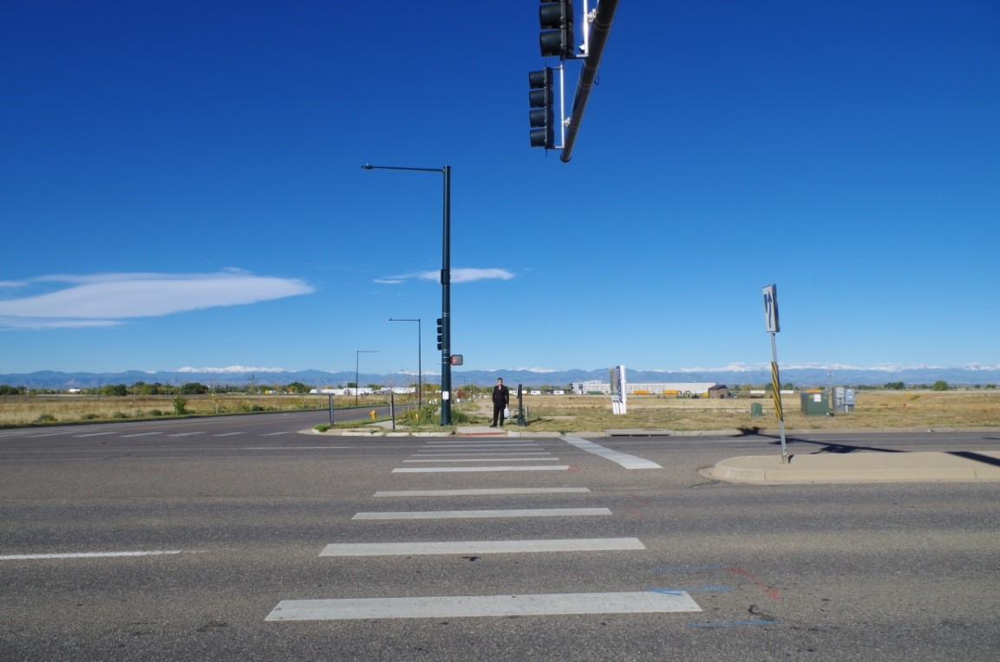
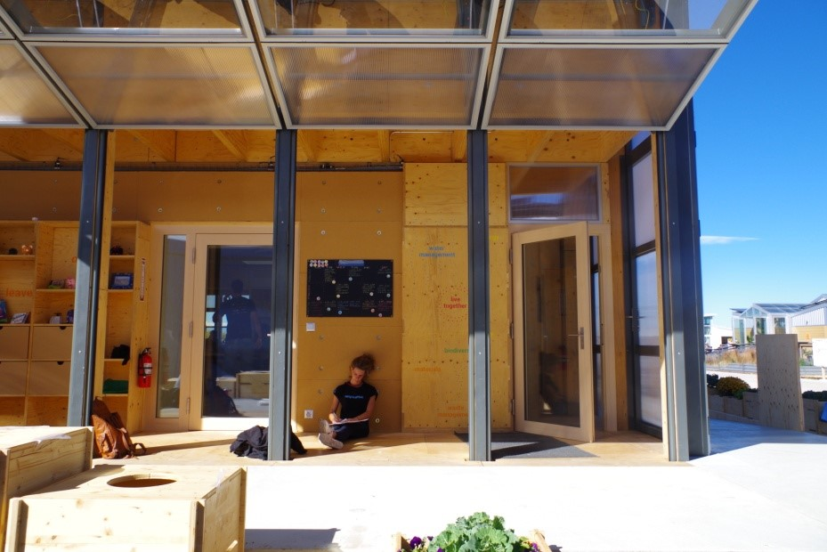
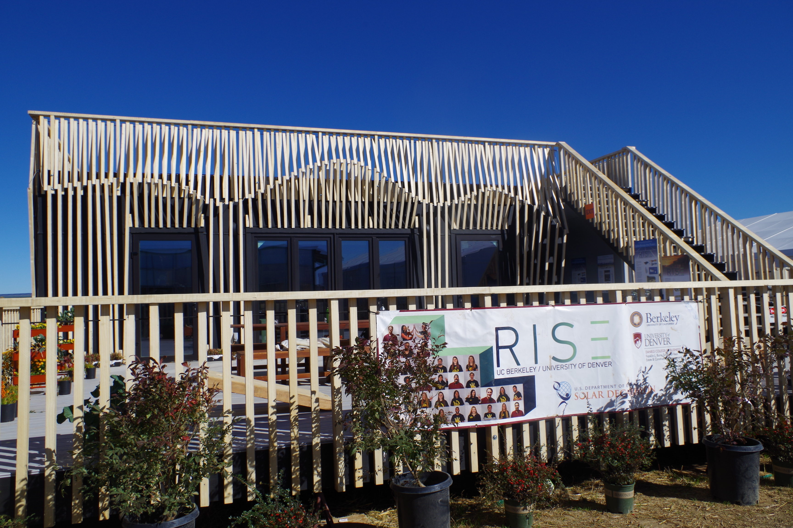
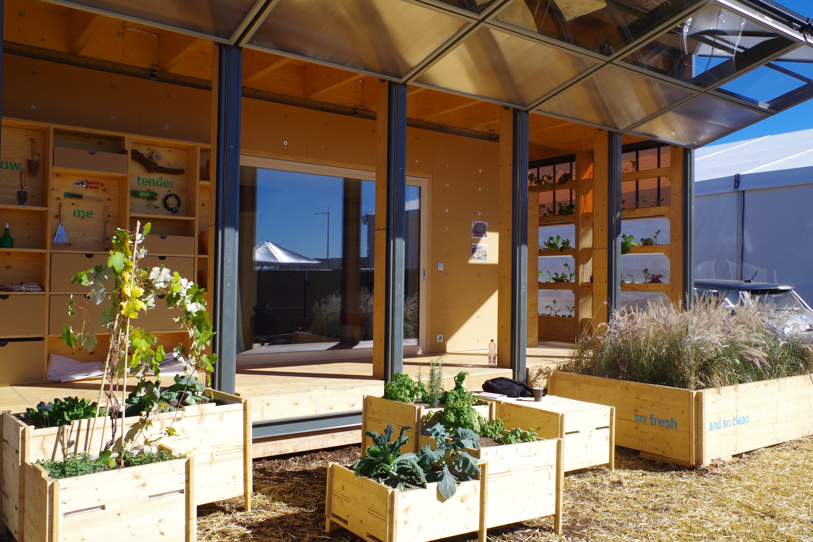
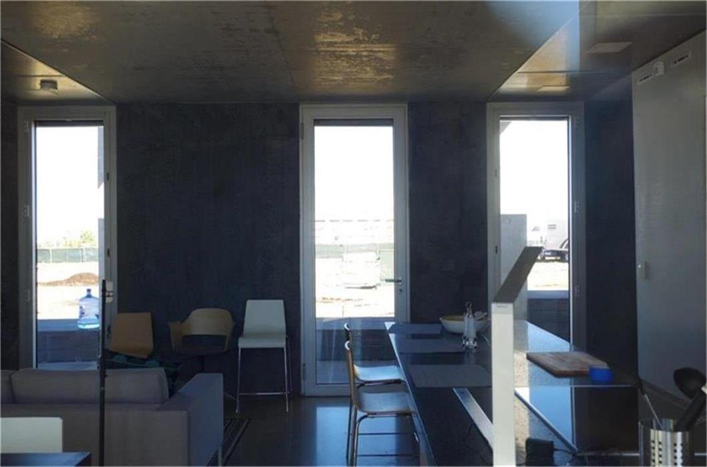
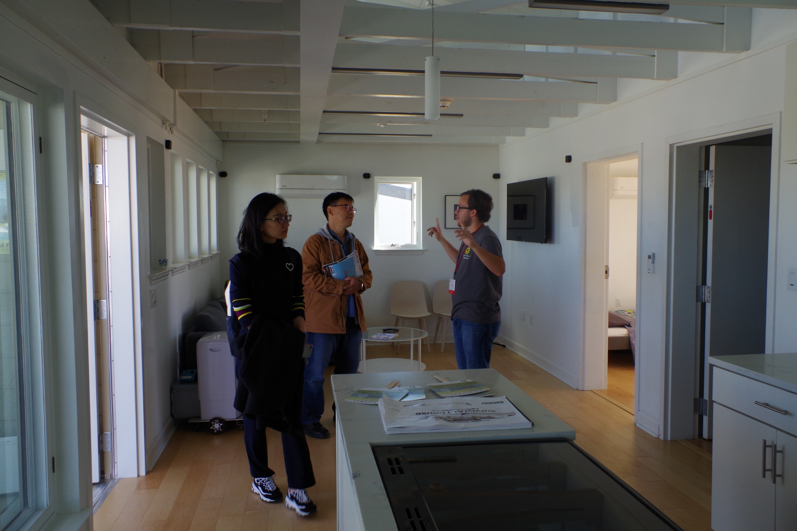
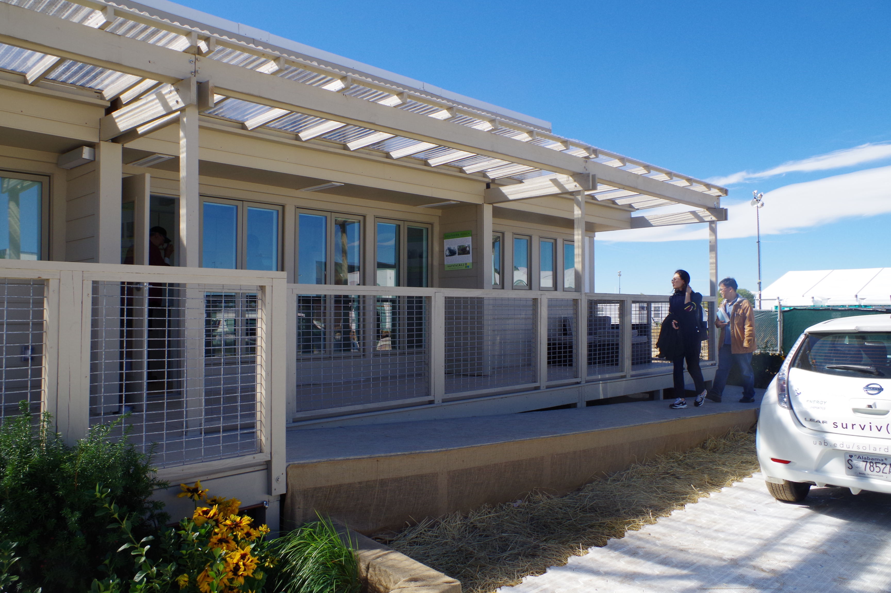
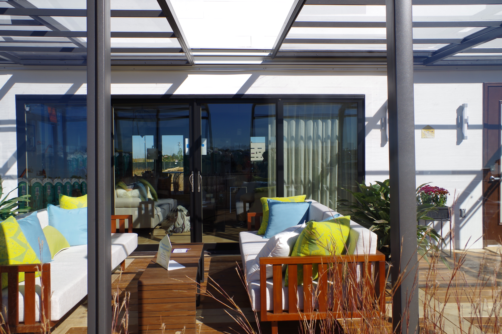
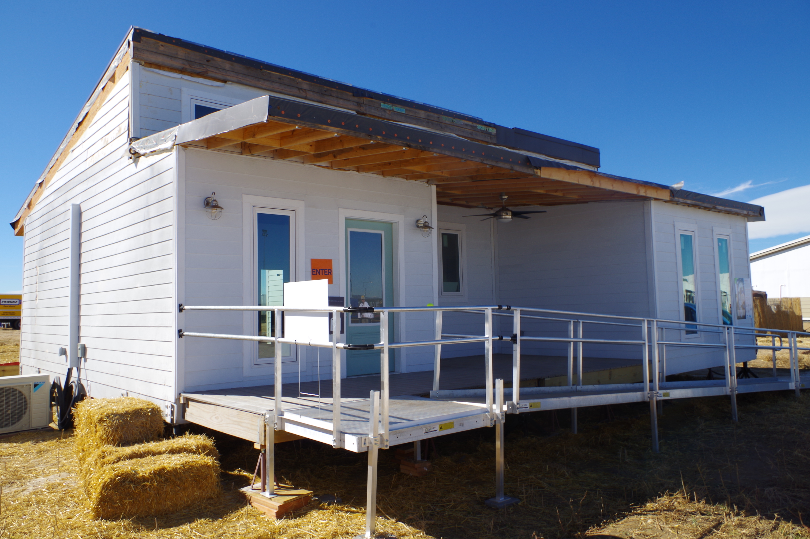
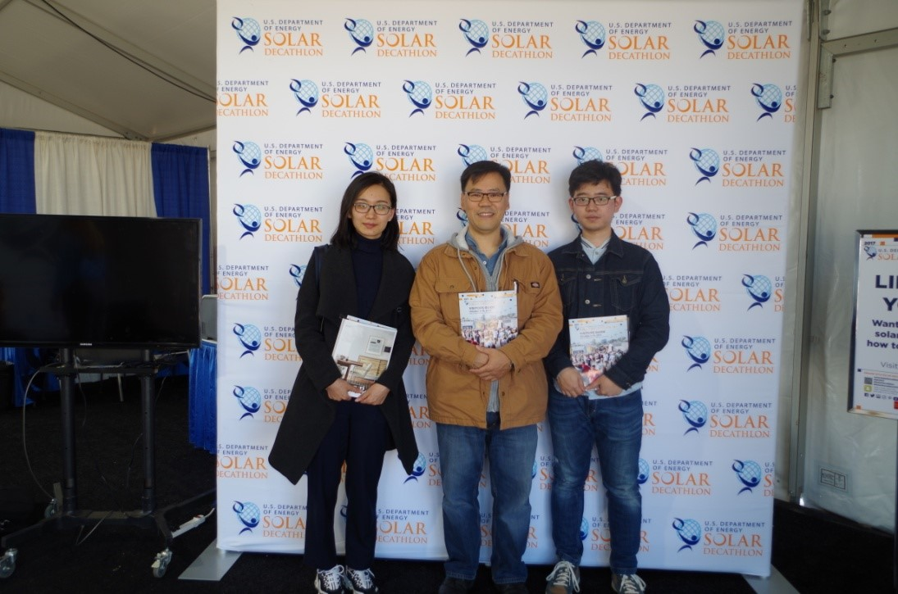

美国交流
Intriguing Buildings and A Fantastic Journey
今年十月，我们赛队的几名学生远赴美国丹佛去参观学习SD2017竞赛。初到丹佛，美国中部的广袤与辽阔，让我立刻就喜欢上了这个地方。竞赛地点位于丹佛市郊。这里刚刚入秋，大地被杂草和荒漠渲染成一片黄色。道路两旁的灌木还保留着墨绿的枝叶。由于远离市区，路上行人很少。路远处有几排灰白色的建筑，掩映在远山下幽静的树林中。空气虽然寒冷干燥，天空却是一片晴朗。一切安静而美好。
In October this year, several students from our team went to Denver, US to visit the SD2017 competition. First time I came to Denver, I was immediately attracted by the length and breadth of land in central United States. The competition site is located on the suburb of Denver. Just autumn, the earth is painted yellow by weeds and deserts and only roadside shrubs still maintain dark green foliage. As it is far away from the city, there are few pedestrians on the road. In the distance, several rows of gray and white buildings are covered in the quiet woods under the mountains. Although the air is cold and dry, the sky is blue and clear. Everything is quiet and beautiful.

李老师为我们预定了距离比赛场地不远处的宾馆（为李老师打Call）。第二天上午九点，我们早早来到比赛现场，却发现并未到开放时间，不能进入到建筑内部。比赛场地不大，12支参赛队伍的房屋分列两排，学生们在各自的房屋内进行设备调试。各个参赛队的房屋体量不大，都是一层，然而各自建筑的形态、颜色和所用的材质却迥然不同。UC Davis赛队应用了自己设计的保温墙体；Netherlands赛队采用了木材作为外墙面；瑞士队可以开启的外墙更是为建筑营造了十分丰富的空间。
Professor Lee booked us a hotel not far from the competition site. The next day, we came to the competition site at nine am. But we are told it's too early to enter the house and can only watch the house in the field. The area of the competition site is not big and the houses of the 12 teams are divided into two rows. The students are doing all kinds of equipment debugging in their own houses. The houses of each team are not large, all of them are one layer. But the form, color and material used in each building are quite different. The UC Davis team used its own thermal insulation wall; the Netherlands team used wood as their external wall and the Swiss team created a very rich space through the outside wall that can be opened.


十一点，我们走进各个赛队房屋内部进行参观。其实每个房屋的平面都不复杂，各个建筑都展示出了丰富的细节，也暴露出了一些问题。我们发现，建筑立面和形态只是整个建筑完成度的一小部分，室内设计的精细程度和各项系统所考虑的周密性同样是决定整个建筑完成度的重要因素。不同赛队建筑的特点也在室内家具的选择和布置上有所体现，例如瑞士赛队可以折叠的纸质家具就让我们留下了深刻的印象。
At eleven o'clock, we finally walked inside each team's house. In fact, the layout of each house is not complex. All buildings have shown a lot of details, but also, some problems are exposed. We found that the building facades and forms are only a small part of the overall building completion, while the delicacy of interior design and the careful consideration of various systems are also important factors in determining the completion of the building. The characteristics of different team's buildings are also reflected in the selection and layout of indoor furniture. For example, the Swiss team's folding paper furniture left a deep impression on us.









参观过程中，李老师为我们介绍了他之前带队参与SD2015竞赛的经历。对于大部分赛队来说，房屋的长途运输是第一项挑战。因为竞赛时间有限，大部分赛队都会在完成房屋基本结构之后再运输到竞赛场地。而对于一所大体量的房屋，长距离的运输并不是一件简单的事情。即使房屋安全运送到竞赛场地，现场安装对于毫无经验的学生来说也是巨大的挑战。建筑的装配，室内各项系统和设备的安装与调试，都需要很多专业学生的密切配合。所以，每个赛队能够顺利把房屋搭建起来，就已经是巨大的成功了。
During the visit, Professor Lee told us his previous experience of taking part in the SD2015 competition. For most of the teams, long distance transportation is the first challenge. Because of the limited time, most teams will complete the basic structure of the houses and then transport them to the competition site. However, long distance transportation is not easy for a big house. Even if the house is safely transported to the competition site, installation can also become a huge challenge for the inexperienced students. The assembly of buildings, the installation and debugging of various indoor systems and equipment need a lot of professional students cooperate closely. As long as we can successfully build up the house, it is already a great success.

这次丹佛SD竞赛的参观时间虽然短暂，然而丰富的收获坚定了我们做好竞赛的决心。相信我们能够在明年的竞赛中取得优异成绩！
The visit of the Denver SD competition was short, however, the rich harvest has strengthened our determination to do a good job next year. I believe we can get good results in next year's competition!